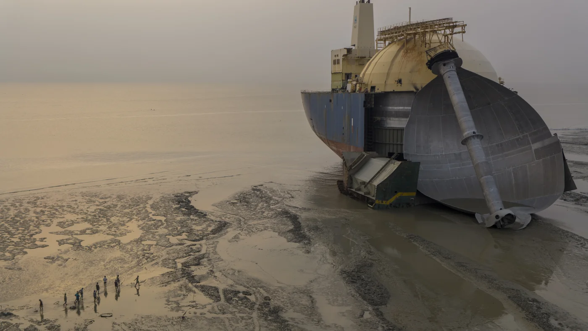

国际油价 / Global Oil Prices
布伦特原油与WTI美国原油最新市场行情。
Brent and WTI crude oil market quotations.
Brent 最新行情 ↗
WTI 最新行情 ↗
价格及更新时间以行情提供方为准。
05

俄罗斯袭击使乌克兰城市陷入停电，泽连斯基警告更多导弹攻击
Russian strikes plunge Ukrainian city into blackout as Zelenskyy warns of more missile attacks
俄罗斯的袭击导致第聂伯市大规模停电。
Russian strikes have caused major power outages in Dnipro, with warnings of more missile attacks.
CNBC · 2026-10-30
原始报道 / Original source ↗06

克莱默的下周展望：预计科技财报和中期选举将带来更多波动
Cramer’s week ahead: Expect more volatility as tech earnings, midterms loom
投资者期待苹果、AMD等公司的财报以及中期选举和月度就业报告。
Investors are anticipating earnings reports from major tech companies and the upcoming midterm elections.
CNBC · 2026-10-30
原始报道 / Original source ↗07
Anthropic通往纳斯达克的道路变得更加坎坷
Anthropic's path to the Nasdaq just got a lot bumpier
来自超大规模公司的不利预测打击了科技股，导致纳斯达克出现三周以来的首次下跌。
Negative projections from hyperscalers have impacted tech stocks, leading to a losing streak for the Nasdaq.
CNBC · 2026-10-31
原始报道 / Original source ↗08
美联储在通胀顽固的情况下维持利率稳定
Fed holds interest rates steady even as inflation remains stubborn
美联储选择保持基准利率不变，但投资者普遍预计将在下次会议上加息。
The Federal Reserve has kept interest rates steady, but investors expect a rate hike in December.
NPR · 2026-10-28
原始报道 / Original source ↗09

混合经济预测在中期选举前施加压力
Mixed economic forecast weighs heavy ahead of midterms
本周经济新闻喜忧参半，GDP增长上升，但价格也在上涨。
The mixed economic news this week presents challenges ahead of the midterm elections.
NPR · 2026-10-31
原始报道 / Original source ↗10

以色列选举中的对手们发出胜利的语气，但结果尚不明朗
Rivals in Israel Election Strike Tone of Triumph, but Outcome Is Far From Clear
内塔尼亚胡和反对派领袖加迪·艾森科特在午夜后对支持者表示信心。
Both Prime Minister Netanyahu and opposition leader Gadi Eisenkot express confidence in leading Israel's next government.
New York Times · 2026-10-28
原始报道 / Original source ↗11

无人机摄影奖获奖作品：奇妙的风景、船舶回收、地毯等！
Drone photo award winners: Far-out landscapes. Ship recycling. Rugs, rugs rugs!
2026年锡耶纳无人机摄影奖展示了地球的壮丽鸟瞰图。
The Siena Drone Photo Awards for 2026 feature stunning aerial views of landscapes and human stories.
NPR · 2026-10-31
原始报道 / Original source ↗12
俄占城市的停火情况如何？
Oleshky: How is the ceasefire in the Russian-occupied city going?
乌克兰记者丹·约翰逊解释了在被毁坏的奥列什基镇的临时停火情况。
Dan Johnson discusses the temporary ceasefire in the devastated town of Oleshky.
BBC News · 2026-10-30
原始报道 / Original source ↗